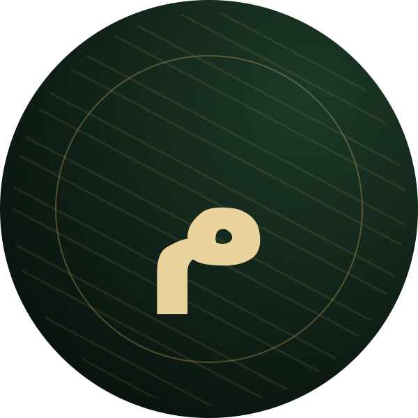

مشرف
لأدمنز التجمع الذين يتولون الإشراف والتنظيم ومساعدة الأعضاء.

توثيقًا لكل فنان وضع جزءًا من روحه في لوحته، وسكب من وقته وجهده وإحساسه في كل خطٍّ ولون...
من الجزيرة… حكاية مستمرةابحث بالاسم، أو الخامة، أو المقاس، أو النوع، أو التصنيف العام، أو اللقب الشخصي.
اكتب كلمة واحدة أو أكثر، وستظهر النتائج فورًا.
التصنيف العام يعبّر عن المستوى الإجمالي للفنان، أما الشارات فتصف أدواره أو أسلوبه أو مهاراته الفنية. قد يحمل الفنان أكثر من شارة، وتُضاف البيانات تدريجيًا مع توسّع الأرشيف.
وجوه مختارة من الأرشيف، واكتشف بقية الملفات من الفهرس الكامل.

ملف جديدمرافئ أحمد البشيربورتريه · أقلام تلوين خشبيةاللقب الشخصي: مرفأ - نوڤا ملف جديدمحمد يوسف احمدالجداريات - البورتريهاللقب الشخصي: نيمار - فيلسوف أعمال موثقةعبد القادر حبيب اللهأنمي · حبراللقب الشخصي: جدو أعمال موثقةمؤتمن أحمد سيد أحمدبورتريه وحيواناتاللقب الشخصي: تمن
من الأرشيفصهيب محمد أحمد محمدأنمي ومانجااللقب الشخصي: أوبي
أعمال موثقةمؤتمن أحمد سيد أحمدبورتريه وحيواناتاللقب الشخصي: تمن
من الأرشيفصهيب محمد أحمد محمدأنمي ومانجااللقب الشخصي: أوبي
 من الأرشيفكعب الأحبار محمد موسىأنمي ومانجا · رقمياللقب الشخصي: كاتشان
من الأرشيفكعب الأحبار محمد موسىأنمي ومانجا · رقمياللقب الشخصي: كاتشان
مساحة مخصصة للوحات المتميزة التي تستحق أن تُعرض بحضور خاص داخل الأرشيف.
أرشيف رقمي لتوثيق فناني ولاية الجزيرة وأعمالهم، وحفظ أثر الإبداع للأجيال القادمة.
استكشف دليل الشاراتشارات تميّز أدوار الأعضاء ومهاراتهم الفنية. افتح كل مجموعة لاستعراض الشارات ومعانيها.
لأدمنز التجمع الذين يتولون الإشراف والتنظيم ومساعدة الأعضاء.
لمن شاركوا في تأسيس التجمع منذ بدايته؛ وقد يظهر في الملف بصيغة «عضو مؤسس».
للفنان الذي يتقن أساليب وخامات متعددة.
لمن يتقن إعادة رسم صورة مرجعية كما هي، مع احترام الحقوق وذكر المصدر أو الحصول على إذن.
للفنان الذي بدأ يبرز في أعماله ويتقدم في مساره الفني.
لمن يرسم مباشرة بحرية دون تتبّع الخطوط أو نقلها.
لمن يمتلك خبرة فنية واسعة وممارسة متقنة ومستقرة.
لمن يعلّم الرسم أو يشارك خبرته ويساعد الفنانين على التعلم.
لمن يواظب على التعلّم والتدريب وتوسيع مهاراته.
لمن يظهر تقدّمًا واضحًا في أعماله خلال فترة قصيرة.
لمن يبني خلفيات غنية بالطبقات والعمق والتفاصيل.
لمن يتقن تشريح الجسم وإبراز بنية العضلات.
لمن يعتني بملمس البشرة وتفاصيل المسام الدقيقة.
لمن يبدع في الظلال والتباين وصناعة العمق.
لمن يبرز مصادر الضوء واللمعات والانعكاسات بدقة.
لمن يضبط المنظور والأبعاد في المشاهد.
لمن ينسّق الألوان ويخلق انسجامًا وتباينًا متقنًا.
لمن يتقن خصائص خامة معينة ويستخرج إمكاناتها الفنية.
لمن ينقل الحركة والحيوية في الوضعيات والتكوين.
لمن يتميز بدقة الخطوط والتحبير والتفاصيل الخطية.
لمن يرتب عناصر اللوحة لتروي مشهدًا متماسكًا.
قد يحمل الفنان أكثر من شارة. ويُراعى في شارة «الناسخ» ذكر مصدر الصورة المرجعية أو الحصول على إذن باستخدامها.